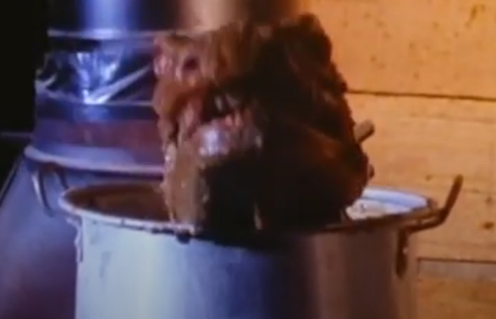

Who wants some of my bodacious chilli?

Ingredients
- Oil for cooking
- 1 large onion peeled and chopped
- 1 clove of garlic peeled and chopped
- 2 tsp light brown sugar
- 1 bay leaf
- 1 tsp dried oregano
- 1 tsp paprika
- 1 tsp ground cumin
- 1 tsp chilli powder
- 1 chopped red pepper
- 1 red chilli finely chopped
- 500g minced beef
- 2 400g tins of tomatoes
- Few splashes of Worchestershire sauce
- Salt and black pepper
Steps
- Heat oil in pan over medium heat
- Add onion and cook for 10 mins
- Add garlic and cook for 1 min
- Stir in brown sugar, bay leaf, oregano, paprika, chilli powder, red pepper, chopped chilli and minced beef
- Stir for about 5 mins until mince is browned
- Add tomatoes, Worchestershire sauce, and salt and pepper
- Bring to boil then reduce the heat
- Simmer for around 1 hour stirring occasionaly to stop mixture sticking to pot
- Check mix after 30 mins and add water if required
- Eat the chilli before it eats you!